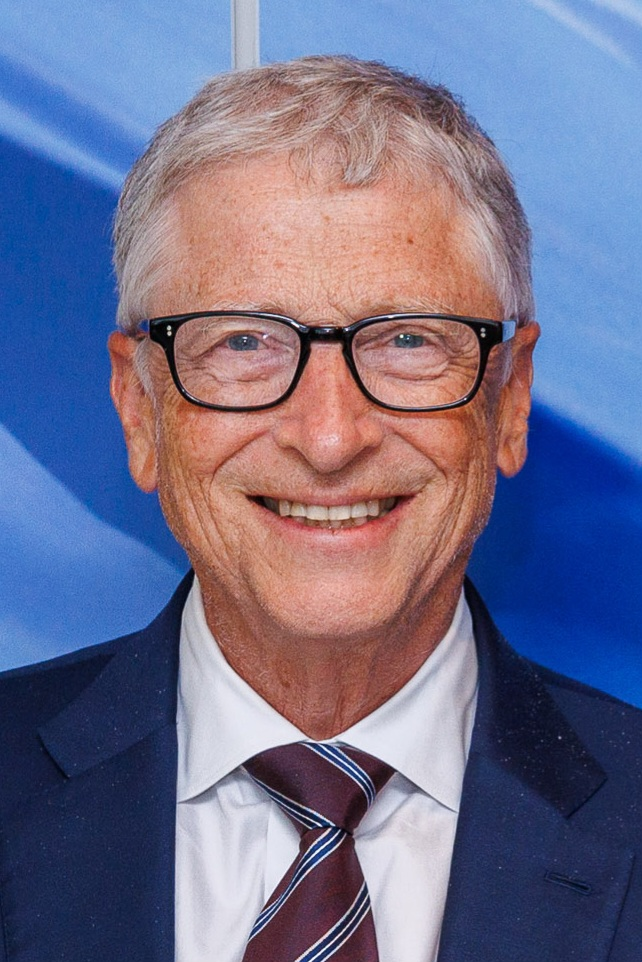
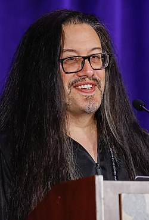

Bill Gates
William Henry "Bill" Gates III KBE • GCIH (Seattle, 28 de outubro de 1955) é um magnata, empresário, diretor executivo, investidor, filantropo e autor norte-americano, que ficou conhecido por fundar, junto com Paul Allen a Microsoft,[2] a maior e mais conhecida empresa de software do mundo em termos de valor de mercado. Gates ocupa atualmente o cargo de presidente não-executivo da Microsoft,[3] além de ser classificado regularmente como a pessoa mais rica do mundo, posição ocupada por ele de 1995 a 2007,[4] 2009,[5] e de 2014 a 2017.[6][7][8][9] É um dos pioneiros na revolução do computador pessoal.
Steve Jobs

Steven Paul Jobs (São Francisco, 24 de fevereiro de 1955 – Palo Alto, 5 de outubro de 2011)[2] foi um inventor, empresário e magnata norte-americano do setor da informática. Notabilizou-se como cofundador, presidente e diretor executivo da Apple Inc.[6] e por revolucionar seis indústrias: computadores pessoais, filmes de animação, música, telefones, tablets e publicações digitais.[7] Além de sua ligação com a Apple, foi diretor executivo da empresa de animação por computação gráfica Pixar e acionista individual máximo da The Walt Disney Company.[8] Morreu no dia 5 de outubro de 2011, aos 56 anos de idade, devido a um câncer pancreático.[2]
Linus Torvalds

Linus Benedict Torvalds (Helsínquia, 28 de dezembro de 1969) é um engenheiro de software, nascido na Finlândia e naturalizado estado-unidense em 2010,[1][2] criador, e por muito tempo o desenvolvedor mais importante do núcleo Linux, sendo utilizado em importantes sistemas Linux, Android e Chrome OS. É também o criador do Git, sistema de controle de versão amplamente utilizado, e o aplicativo para planejamento e registro de mergulho, Subsurface.[3]
John Romero
John Romero (nascido Alfonso John Romero, em 28 de outubro de 1967, na cidade de Colorado Springs, Colorado) é um designer de jogos e programador. É responsável pela popularização dos jogos de tiro em primeira pessoa, como Doom, Wolfenstein 3D, Quake, e Daikatana, que ficaram conhecidos mundialmente.[1]